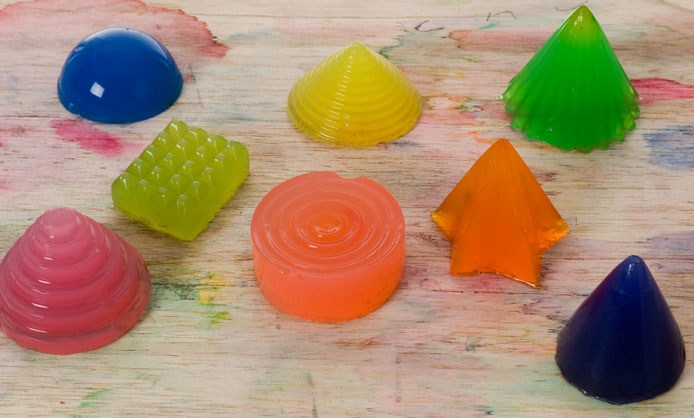

Task: Make a mold (can be 1 or two sides) HARD-SOFT-HARD . 3DPRINT- CAST SILICONE- CAST SOMETHING INSIDE. You can use biomaterials to substitute the silicone or the final cast.
During the Fab Academy, I found the molding and casting class the most interesting. For the project, I decided to make a one sided mould with store bought gelatine. The exploration and experiment was to be a prototype of Micro Challenge III, inspired by the project ”Noisy Jelly” by Raphaël Pluvinage and Marianne Cauvard at L'Ensci Les Ateliers You can find their project reference here.

NOISY JELLY from PINAFFO — PLUVINAGE on Vimeo.
The idea was to make prototype buttons for a input device/ keyboard as an alternative input using gelatine. In collaboration with my classmate Andrea, we wanted to replace keys of an old keyboard with gelatine alternative. For the prototype, the idea was to test the rigidity and detail of the small buttons and if the detail of the buttons were visible.
First, the molds for the buttons were designed on Rhino. Then after printing on the Ender printer, which did not take a long time to print.
Following instructions of the gelatine, this was the ingredients and method:
Method:
In a medium saucepan, place the water and Bring it to the boil. Remove from heat and whisk in gelatine to dissolve. Stir through. After the gelatine was done, it was poured in the small mould, and let to be set for a an hour, although humidity and temperature in the room do effect the drying period. After removing it, we realised the detail of the character did not come out as precise, and that it was not stable or tough enough to be used as a button.